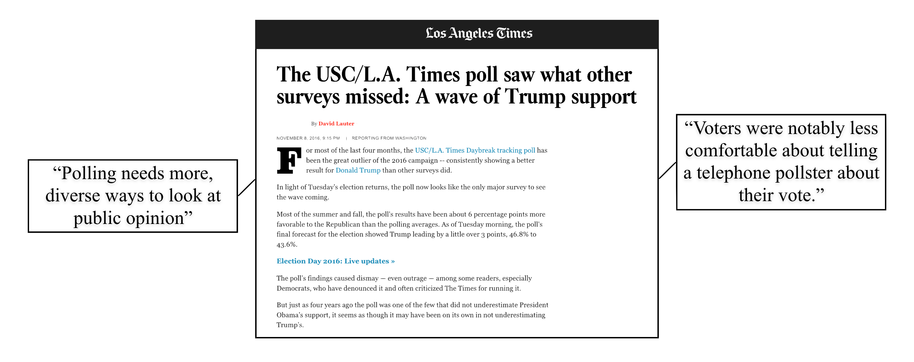

POLLING. REDEFINED.
We collect massive amounts of twitter and facebook content about your issue.
Our proprietary sentiment analysis program analyzes these posts, instantly finding out what the public is saying about the issue.
We display the results in a clean, user-friendly interface.
POLLING NEEDS TO CHANGE.
TRADITIONAL POLLS
- Only call landlines (no cell phones)
- 90% of phone polls don't actually result in a valid interview (source)
- 3rd party and Trump voters were noticiably less comfortable responding to phone/in-person polls (source)
- Cost thousands of dollars
- Take weeks to conduct
- Often inaccurate
- Americans now spend 1/3 of their time on social media (source)
- 84% of americans are more comfortable discussing civic issues on social media than in person
- Instant
- A fraction of the cost
THE PROOF
Current polling methods are outdated and unreliable.In 2016, only the LA Times correctly predicted the presidential election’s outcome. 
The LA Times used the internet presence of voters in order to accurately predict the election result.
FeedScore improves this proven concept using our proprietary algorithm in order to poll faster, cheaper, and more accurately than ever before.
FeedScore improves this proven concept using our proprietary algorithm in order to poll faster, cheaper, and more accurately than ever before.
CONTACT
Hugo Burbelo
Project Manager & Full-Stack Engineer
Project Manager & Full-Stack Engineer
Liam Rathke
Design and Strategy Lead
Design and Strategy Lead
Robert West
Backend Engineer
Backend Engineer
Daniel Walsh
Research and Partnerships Lead
Research and Partnerships Lead
Contact us here to sign up: